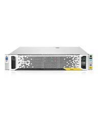

HPE StoreEasy 3850 Tech Specs:
- HPE ProLiant based
- Processor is Intel Xeon E5 6 core 1.9GHz
- Memory 32GB
- Expansion slots, 2 x PCIe
- Twenty four SFF internal hard drives (2 mirrored SFF SSDs reserved for OS)
- Microsoft Windows Storage Server 2016 or 2012 R2
- File and block storage capable - CIFS/SMB, NFS, iSCSI, HTTP, FTP, and WebDAV
- Designed to attach to Fibre Channel, or iSCSI arrays
- Certified arrays = HPE 3PAR, HPE Nimble, HPE StoreVirtual, HPE P9000/XP, HPE MSA